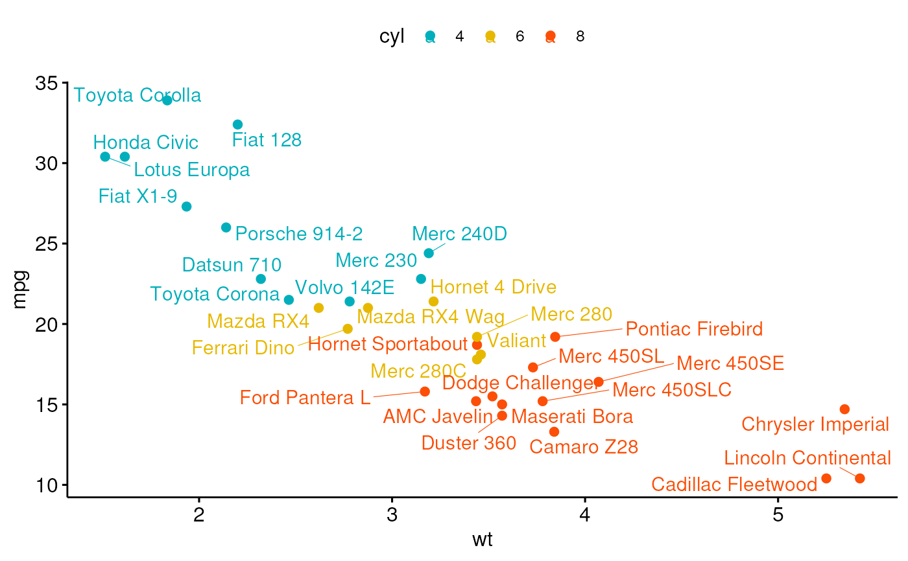
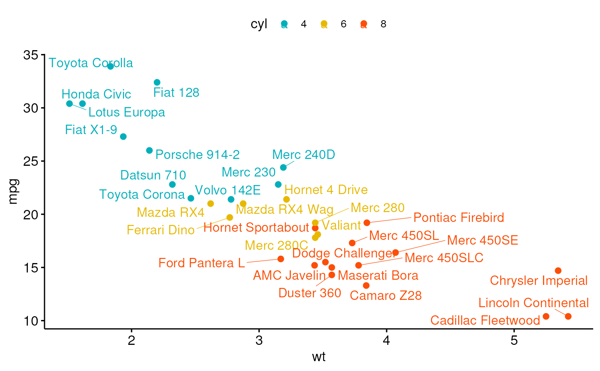

Create a scatter plot.
ggscatter(
data,
x,
y,
combine = FALSE,
merge = FALSE,
color = "black",
fill = "lightgray",
palette = NULL,
shape = 19,
size = 2,
point = TRUE,
rug = FALSE,
title = NULL,
xlab = NULL,
ylab = NULL,
facet.by = NULL,
panel.labs = NULL,
short.panel.labs = TRUE,
add = c("none", "reg.line", "loess"),
add.params = list(),
conf.int = FALSE,
conf.int.level = 0.95,
fullrange = FALSE,
ellipse = FALSE,
ellipse.level = 0.95,
ellipse.type = "norm",
ellipse.alpha = 0.1,
ellipse.border.remove = FALSE,
mean.point = FALSE,
mean.point.size = ifelse(is.numeric(size), 2 * size, size),
star.plot = FALSE,
star.plot.lty = 1,
star.plot.lwd = NULL,
label = NULL,
font.label = c(12, "plain"),
font.family = "",
label.select = NULL,
repel = FALSE,
label.rectangle = FALSE,
parse = FALSE,
cor.coef = FALSE,
cor.coeff.args = list(),
cor.method = "pearson",
cor.coef.coord = c(NULL, NULL),
cor.coef.size = 4,
ggp = NULL,
show.legend.text = NA,
ggtheme = theme_pubr(),
...
)Arguments
- data
a data frame
- x
x variables for drawing.
- y
y variables for drawing.
- combine
logical value. Default is FALSE. Used only when y is a vector containing multiple variables to plot. If TRUE, create a multi-panel plot by combining the plot of y variables.
- merge
logical or character value. Default is FALSE. Used only when y is a vector containing multiple variables to plot. If TRUE, merge multiple y variables in the same plotting area. Allowed values include also "asis" (TRUE) and "flip". If merge = "flip", then y variables are used as x tick labels and the x variable is used as grouping variable.
- color, fill
point colors.
- palette
the color palette to be used for coloring or filling by groups. Allowed values include "grey" for grey color palettes; brewer palettes e.g. "RdBu", "Blues", ...; or custom color palette e.g. c("blue", "red"); and scientific journal palettes from ggsci R package, e.g.: "npg", "aaas", "lancet", "jco", "ucscgb", "uchicago", "simpsons" and "rickandmorty".
- shape
point shape. See
show_point_shapes.- size
Numeric value (e.g.: size = 1). change the size of points and outlines.
- point
logical value. If TRUE, show points.
- rug
logical value. If TRUE, add marginal rug.
- title
plot main title.
- xlab
character vector specifying x axis labels. Use xlab = FALSE to hide xlab.
- ylab
character vector specifying y axis labels. Use ylab = FALSE to hide ylab.
- facet.by
character vector, of length 1 or 2, specifying grouping variables for faceting the plot into multiple panels. Should be in the data.
- panel.labs
a list of one or two character vectors to modify facet panel labels. For example, panel.labs = list(sex = c("Male", "Female")) specifies the labels for the "sex" variable. For two grouping variables, you can use for example panel.labs = list(sex = c("Male", "Female"), rx = c("Obs", "Lev", "Lev2") ).
- short.panel.labs
logical value. Default is TRUE. If TRUE, create short labels for panels by omitting variable names; in other words panels will be labelled only by variable grouping levels.
- add
allowed values are one of "none", "reg.line" (for adding linear regression line) or "loess" (for adding local regression fitting).
- add.params
parameters (color, size, linetype) for the argument 'add'; e.g.: add.params = list(color = "red").
- conf.int
logical value. If TRUE, adds confidence interval.
- conf.int.level
Level controlling confidence region. Default is 95%. Used only when add != "none" and conf.int = TRUE.
- fullrange
should the fit span the full range of the plot, or just the data. Used only when add != "none".
- ellipse
logical value. If TRUE, draws ellipses around points.
- ellipse.level
the size of the concentration ellipse in normal probability.
- ellipse.type
Character specifying frame type. Possible values are
"convex","confidence"or types supported bystat_ellipse()including one ofc("t", "norm", "euclid")for plotting concentration ellipses."convex": plot convex hull of a set o points."confidence": plot confidence ellipses arround group mean points asFactoMineR::coord.ellipse()."t": assumes a multivariate t-distribution."norm": assumes a multivariate normal distribution."euclid": draws a circle with the radius equal to level, representing the euclidean distance from the center. This ellipse probably won't appear circular unlesscoord_fixed()is applied.
- ellipse.alpha
Alpha for ellipse specifying the transparency level of fill color. Use alpha = 0 for no fill color.
- ellipse.border.remove
logical value. If TRUE, remove ellipse border lines.
- mean.point
logical value. If TRUE, group mean points are added to the plot.
- mean.point.size
numeric value specifying the size of mean points.
- star.plot
logical value. If TRUE, a star plot is generated.
- star.plot.lty, star.plot.lwd
line type and line width (size) for star plot, respectively.
- label
the name of the column containing point labels. Can be also a character vector with length = nrow(data).
- font.label
a vector of length 3 indicating respectively the size (e.g.: 14), the style (e.g.: "plain", "bold", "italic", "bold.italic") and the color (e.g.: "red") of point labels. For example font.label = c(14, "bold", "red"). To specify only the size and the style, use font.label = c(14, "plain").
- font.family
character vector specifying font family.
- label.select
character vector specifying some labels to show.
- repel
a logical value, whether to use ggrepel to avoid overplotting text labels or not.
- label.rectangle
logical value. If TRUE, add rectangle underneath the text, making it easier to read.
- parse
If
TRUE, the labels will be parsed into expressions and displayed as described in?plotmath.- cor.coef
logical value. If TRUE, correlation coefficient with the p-value will be added to the plot.
- cor.coeff.args
a list of arguments to pass to the function
stat_corfor customizing the displayed correlation coefficients. For example:cor.coeff.args = list(method = "pearson", label.x.npc = "right", label.y.npc = "top").- cor.method
method for computing correlation coefficient. Allowed values are one of "pearson", "kendall", or "spearman".
- cor.coef.coord
numeric vector, of length 2, specifying the x and y coordinates of the correlation coefficient. Default values are NULL.
- cor.coef.size
correlation coefficient text font size.
- ggp
a ggplot. If not NULL, points are added to an existing plot.
- show.legend.text
logical. Should text be included in the legends? NA, the default, includes if any aesthetics are mapped. FALSE never includes, and TRUE always includes.
- ggtheme
function, ggplot2 theme name. Default value is theme_pubr(). Allowed values include ggplot2 official themes: theme_gray(), theme_bw(), theme_minimal(), theme_classic(), theme_void(), ....
- ...
other arguments to be passed to
geom_pointandggpar.
Details
The plot can be easily customized using the function ggpar(). Read ?ggpar for changing:
main title and axis labels: main, xlab, ylab
axis limits: xlim, ylim (e.g.: ylim = c(0, 30))
axis scales: xscale, yscale (e.g.: yscale = "log2")
color palettes: palette = "Dark2" or palette = c("gray", "blue", "red")
legend title, labels and position: legend = "right"
plot orientation : orientation = c("vertical", "horizontal", "reverse")
See also
stat_cor, stat_stars, stat_conf_ellipse and ggpar.
Examples
# Load data
data("mtcars")
df <- mtcars
df$cyl <- as.factor(df$cyl)
head(df[, c("wt", "mpg", "cyl")], 3)
#> wt mpg cyl
#> Mazda RX4 2.620 21.0 6
#> Mazda RX4 Wag 2.875 21.0 6
#> Datsun 710 2.320 22.8 4
# Basic plot
# +++++++++++++++++++++++++++
ggscatter(df, x = "wt", y = "mpg",
color = "black", shape = 21, size = 3, # Points color, shape and size
add = "reg.line", # Add regressin line
add.params = list(color = "blue", fill = "lightgray"), # Customize reg. line
conf.int = TRUE, # Add confidence interval
cor.coef = TRUE, # Add correlation coefficient. see ?stat_cor
cor.coeff.args = list(method = "pearson", label.x = 3, label.sep = "\n")
)
# loess method: local regression fitting
ggscatter(df, x = "wt", y = "mpg",
add = "loess", conf.int = TRUE)
# Control point size by continuous variable values ("qsec")
ggscatter(df, x = "wt", y = "mpg",
color = "#00AFBB", size = "qsec")
 # Change colors
# +++++++++++++++++++++++++++
# Use custom color palette
# Add marginal rug
ggscatter(df, x = "wt", y = "mpg", color = "cyl",
palette = c("#00AFBB", "#E7B800", "#FC4E07") )
# Change colors
# +++++++++++++++++++++++++++
# Use custom color palette
# Add marginal rug
ggscatter(df, x = "wt", y = "mpg", color = "cyl",
palette = c("#00AFBB", "#E7B800", "#FC4E07") )
 # Add group ellipses and mean points
# Add stars
# +++++++++++++++++++
ggscatter(df, x = "wt", y = "mpg",
color = "cyl", shape = "cyl",
palette = c("#00AFBB", "#E7B800", "#FC4E07"),
ellipse = TRUE, mean.point = TRUE,
star.plot = TRUE)
# Add group ellipses and mean points
# Add stars
# +++++++++++++++++++
ggscatter(df, x = "wt", y = "mpg",
color = "cyl", shape = "cyl",
palette = c("#00AFBB", "#E7B800", "#FC4E07"),
ellipse = TRUE, mean.point = TRUE,
star.plot = TRUE)
 # Textual annotation
# +++++++++++++++++
df$name <- rownames(df)
ggscatter(df, x = "wt", y = "mpg",
color = "cyl", palette = c("#00AFBB", "#E7B800", "#FC4E07"),
label = "name", repel = TRUE)

# Textual annotation
# +++++++++++++++++
df$name <- rownames(df)
ggscatter(df, x = "wt", y = "mpg",
color = "cyl", palette = c("#00AFBB", "#E7B800", "#FC4E07"),
label = "name", repel = TRUE)
